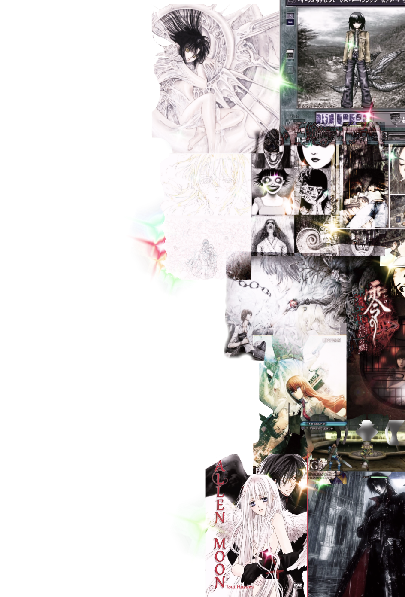

INFO
CONTACTO
INICIO
INFORMACIÓN
¿Qué es
WEEB FESTIVAL
?
¡Bienvenidos a WEEB FESTIVAL! Este no es un festival cualquiera: aquí celebramos lo mejor de la animación japonesa, pero con un toque especial. Nos enfocamos en los estilos más impactantes, rebeldes y únicos que han marcado el anime y los videojuegos.
Si eres fan del cyberpunk, con sus ciudades llenas de neón y su visión del futuro distópico, del visual kei, con su estética extravagante y su actitud desafiante, o del arte satírico, que usa la animación para criticar la sociedad con ironía y humor, este es tu lugar.
¿Qué hace especial al anime?
El anime no es solo “dibujos animados”, es una forma de arte con
características únicas que lo diferencian del resto del mundo:
– Desde referencias en películas y videojuegos hasta moda y filosofía
de vida.
¿Qué encontrarás en el festival?
Durante el evento podrás disfrutar de:
Proyecciones de anime y películas cyberpunk icónicas.
Zona gamer con videojuegos japoneses clásicos y actuales.
Exposiciones de arte visual y diseños inspirados en el visual kei.
Charlas y mesas redondas con artistas y expertos.
Concursos, cosplay y actividades interactivas.
Si te apasiona la animación japonesa y quieres sumergirte en su lado más
atrevido y creativo, WEEB FESTIVAL es tu sitio. ¡Nos vemos allí!

¡Bienvenidos a WEEB FESTIVAL! Este no es un festival cualquiera: aquí celebramos lo mejor de la animación japonesa, pero con un toque especial. Nos enfocamos en los estilos más impactantes, rebeldes y únicos que han marcado el anime y los videojuegos.
Si eres fan del cyberpunk, con sus ciudades llenas de neón y su visión del futuro distópico, del visual kei, con su estética extravagante y su actitud desafiante, o del arte satírico, que usa la animación para criticar la sociedad con ironía y humor, este es tu lugar.
¿Qué hace especial al anime?
- Estilos visuales únicos
-
– Desde el realismo detallado hasta diseños súper estilizados, cada
obra tiene una identidad propia.
- Historias profundas y emocionales
-
– No importa si es una historia de ciencia ficción o un drama
cotidiano, el anime sabe tocar el corazón.
- Creatividad sin límites
-
– Mundos imaginativos, personajes inolvidables y giros inesperados.
- Música que atrapa
-
– Openings, endings y bandas sonoras que se quedan en la mente por
años.
- Impacto cultural
¿Qué encontrarás en el festival?